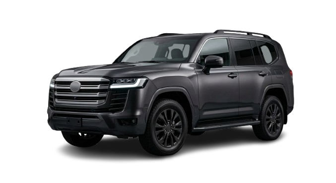
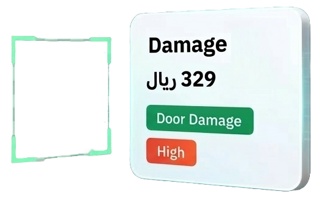
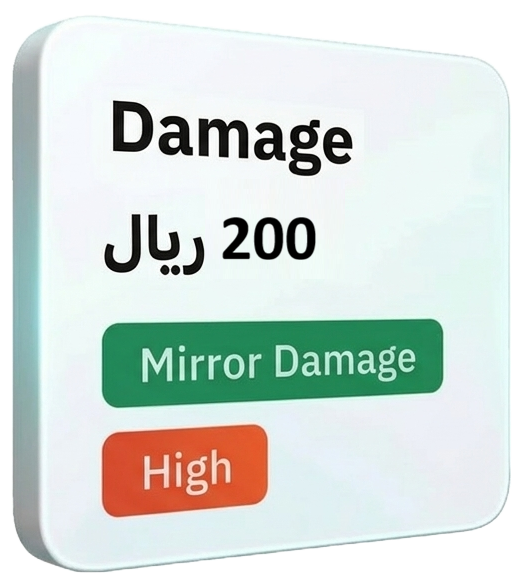
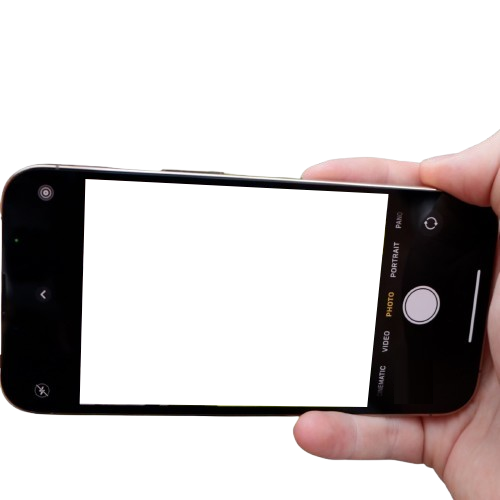

AI Inspection · Interactive Demo
Move your mouse over the scene to experience the depth effect. Adjust the parameters with the sliders — changes apply in real time.




Tune Parameters
Scene Tilt Max (°)
Car Center & Scale
Anchor 1 — Door Damage
Anchor 2 — Mirror Damage
Anchor 3 — Camera
Tap to enable tilt control
Download Now!